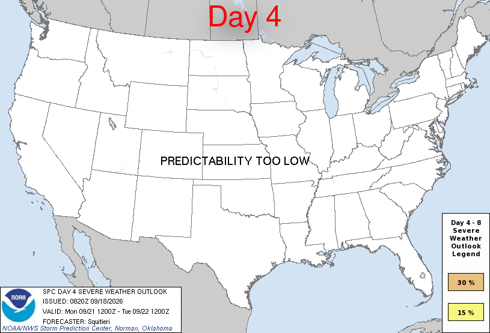

🍀
loading the weather at Clover Terrace…
🍀
Clover Terrace Weather
Loading...
Forecast
Station Camera
Sky & Space

Storm Center
live feed
waiting for update
Watches
Watches
0
Mesoscale Discussions
MDs
0
NWS Updates
NWS
0
No active watches.
No recent mesoscale discussions.
No recent NWS updates.
SPC Outlooks
Convective
Thunderstorm
Right now · Day 1

Day 1
Day 2
Day 3
Day 4–8
Swipe the large outlook or tap a preview to switch days
Loading current thunderstorm outlook periods…
Swipe the large outlook or tap a preview to switch periods
Live Radar
Forecast Map
RainViewer
meteoblue
Historical Data
24 Hours
2 Days
4 Days
7 Days
10 Days
Temperature & Humidity — Last 24 Hours
Wind Speed & Gusts — Last 24 Hours
Wind Direction — Last 24 Hours
Barometric Pressure — Last 24 Hours
River Gauge — Last 24 Hours
Solar Illumination — Last 24 Hours
×